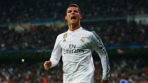

Cristiano Ronaldo is een Portugese profvoetballer, die op dit moment bij de Italiaanse voetbalclub Juventus speelt. Hij is geboren op 5 februari 1985, in het Portugese plaatsje Funchal. Oorspronkelijk heet hij Cristiano Ronaldo dos Santos Aveiro, maar de meeste mensen kennen hem gewoon als 'Ronaldo' of 'de nummer 7'. Zijn vader was tuinman en zijn moeder was kok. Ronaldo was een ongewenst kind en zijn moeder wilde dan ook abortus, maar die bleef uit. Ronaldo was nooit een schoolkind, hij had een hekel aan school en wilde het liefst de hele dag alleen maar voetballen. De plaats Funchal, waar Ronaldo is geboren ligt op het Portugese eiland Madeira. Ronaldo bleef hier maar tot zijn 12e op dit eiland. Toen hij 12 was, verhuisde hij namelijk naar het vasteland. Hij ging hier spelen in de jeugdopleiding van Sporting Lissabon. Vanaf hier begon hij aan zijn droomcarrière en groeide hij uit tot 1 van de beste voetballers van de wereld.
Cristiano heeft bij 4 verschillende gespeeld, in de zomer van 2003 speelde Sporting een wedstrijd tegen Manchester United. Door de nummer 7 werd de wedstrijd beslist in een 3-1 voor de Portugezen. Manchester United besloot hem voor 12 miljoen pond over te kopen van Sporting, Ronaldo was toen maar 18 jaar oud. In 2006/2007 ontwikkelde hij zich tot één van de beste voetballers van de wereld. Ondanks alle successen bij United werd hij in Juni 2009 overkocht door Real Madrid voor een recordbedrag van 94 miljoen euro. Ook liet hij zijn benen voor 100 miljoen verzekeren. Bij Real Madrid werd hij de echte bekende Ronaldo zoals mensen hem nu kennen. Hij speelde maar liefst 438 wedstrijden, en scoorde 450 keer bij dit BBVA-team! Maar ook aan dit avontuur kwam een eind. In juli 2018 werd Ronaldo overgekocht door Seria A-team Juventus, voor een bedrag van 105 miljoen euro! Als sinds 2004 doet Ronaldo mee voor Portugal aan interlands. Zijn eerste interland-wedstrijd was namelijk op het EK 2004. Maar ook Ronaldo is geen heilig boontje, meerdere vrouwen zeggen dat ze door hem zijn aangerand. Ook moest hij in 2017 al een boete van 18.8 miljoen euro betalen voor belastingfraude, dit zal hem niet veel pijn gedaan hebben, aangezien zijn salaris toen 84 miljoen euro per jaar was!
Op deze website kan je heel veel informatie en statistieken over Cristiano vinden, natuurlijk de algemene informatie op deze pagina, maar ook over alle prijzen die hij gewonnen heeft. In totaal heeft hij tot nu toe 80 prijzen, waarvan 33 in teamverband gewonnen. Op de laatste pagina is ook nog een shop te vinden, waar je tegen scherpe prijzen vele artikelen van de nummer 7 kan vinden.